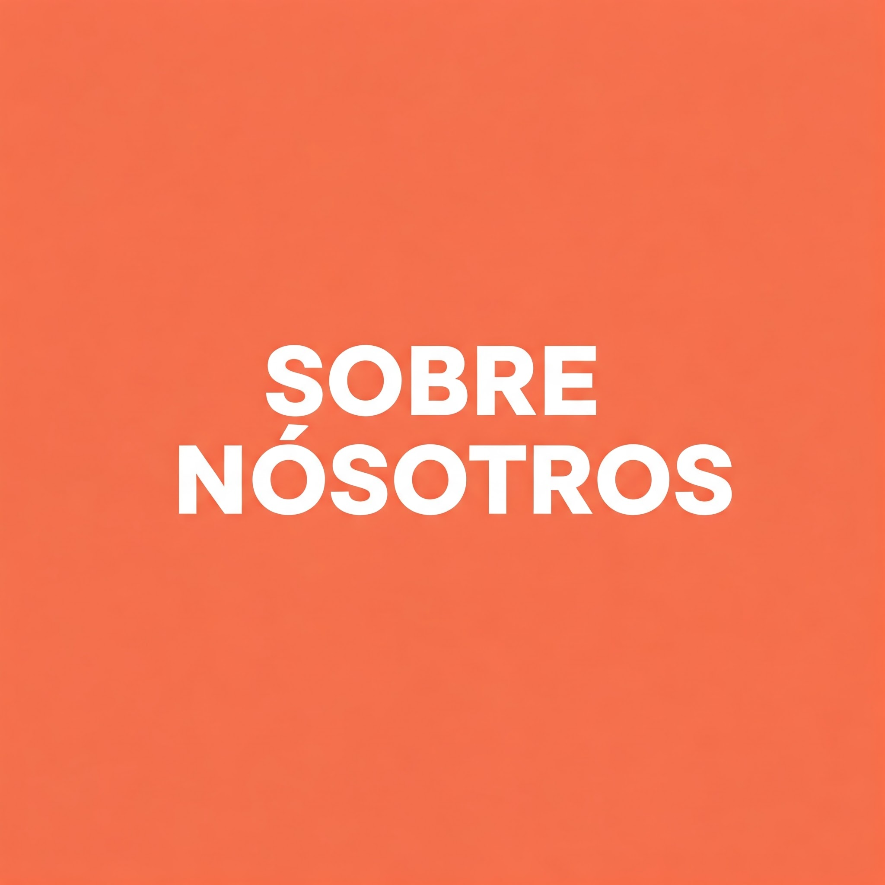

Amor por las mascotas, potenciado con tecnología 💚
En Petronix Pet, creemos que cada mascota merece una vida cómoda, feliz y llena de cuidados.
Nacimos de una simple pregunta: ¿Cómo podemos mejorar la vida de nuestros peludos cuando no estamos en casa?
Por eso, unimos dos pasiones: el amor por los animales y la innovación.
Desde 2025, ayudamos a dueños de toda Colombia a cuidar, alimentar y entretener a sus mascotas con productos inteligentes, accesibles y fáciles de usar.
- 📦 Envíos gratis y seguimiento online
- 📱 Productos con apps intuitivas
- 🛠️ Soporte técnico personalizado
- 🐕 Probado por mascotas reales, como Clem (nuestro perrito tester oficial 🐶)
¿Quién es Clem?
Clem es nuestro perrito tester oficial. Antes de lanzar cualquier producto, lo probamos con él para asegurarnos de que sea seguro y fácil de usar.
¡Así que puedes confiar en que nuestros gadgets han sido aprobados por un experto!